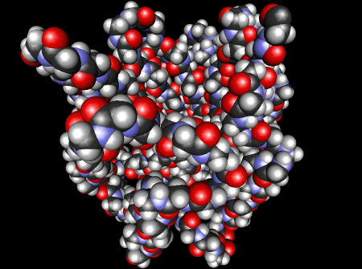
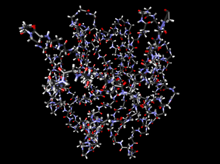
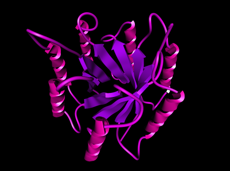
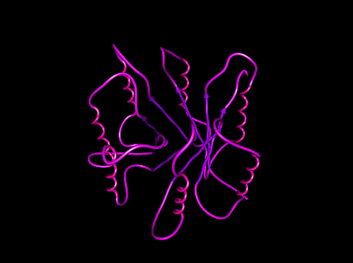
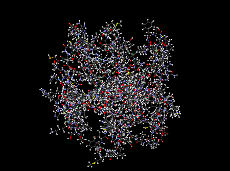
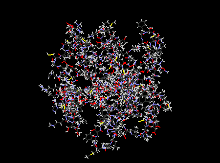
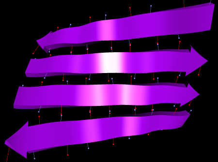
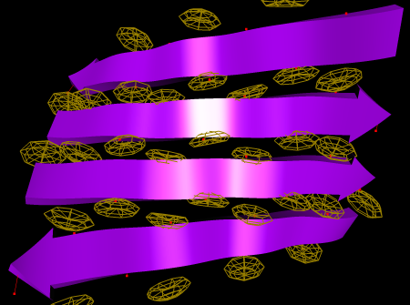
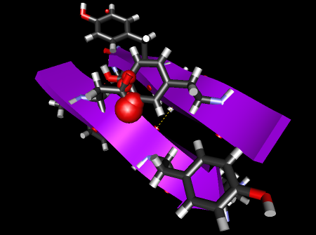

ProteinShop supports several basic rendering modes for protein structures, and several manipulation guides that are designed to assist a user in creating "good" protein structures. All rendering features can be toggled on/off either via hotkeys, or via the Drawing Toggles Dialog. Most features can be toggled both globally for an entire protein or on a per-structure basis. If a rendering feature can be toggled per structure and has a hotkey, it can be toggled for the currently selected structure by holding down the <Ctrl> modifier key and pressing the appropriate hotkey for the global setting.
Rendering modes can be combined arbitrarily (leading to more or less useful results). Features that have both a global and per-structure setting are enabled only if both settings are turned on. For example, hydrogen bond site rendering is, per default, disabled globally and enabled per-structure for all beta-strands in a protein. If the feature is then enabled globally, all beta-strands will be rendered with hydrogen bond sites.
ProteinShop's basic protein rendering modes are modeled after those found in other molecular visualization packages.
In this rendering mode, each atom inside a protein is rendered as a sphere, see Figure 1. The radius of a sphere is the van-der-Waals radius of its atom's element. Spheres are colored according to standard usage in chemical visualization programs and textbooks. This rendering mode can be toggled globally or per structure, via one of the "Draw atoms" toggles in the Drawing Toggles Dialog or via the a hotkey.
|
 |
|
Figure 1: Visualization of a protein using van-der-Waals spheres. |
In this mode, each covalent bond inside a protein is rendered as a two-color cylinder of fixed radius, see Figure 2. Each cylinder half is colored according to the element of the atom at that end of the cylinder. This rendering mode can be toggled globally or per structure, via one of the "Draw side chain bonds" toggles in the Drawing Toggles Dialog or via the b hotkey.
|
 |
|
Figure 2: Visualization of a protein using bond sticks. |
In this mode, only a protein's backbone is rendered to reduce occlusion and visual clutter, see Figure 3. ProteinShop uses different glyphs to visually distinguish the three basic secondary structure types:
Alpha-helices are rendered as helices of thick ribbons in a red-purple color.
Beta-strands are rendered as thick arrows in a blue-purple color.
Coil regions are rendered as cylindrical tubes in a purple color.
This rendering mode can be toggled globally or per structure, via one of the "Draw structure cartoons" toggles in the Drawing Toggles Dialog or via the n hotkey.
|
 |
|
Figure 3: Visualization of a protein using structure cartoons. |
In this mode, only a protein's backbone is rendered to reduce occlusion and visual clutter, see Figure 4. ProteinShop uses different colors to visually distinguish the three basic secondary structure types:
Alpha-helices are rendered as cylindrical tubes in a red-purple color.
Beta-strands are rendered as cylindrical tubes with an arrow head in a blue-purple color.
Coil regions are rendered as cylindrical tubes in a purple color.
This rendering mode can be toggled globally or per structure, via one of the "Draw tube" toggles in the Drawing Toggles Dialog or via the t hotkey.
|
 |
|
Figure 4: Visualization of a protein using tubes. |
In this mode, each covalent bond inside a protein is rendered as a two-color cylinder of fixed radius and a sphere at the end of cylinder, see Figure 5. Each half-cylinder and sphere is colored according to the element of the atom at the end of that cylinder. This rendering mode can be toggled globally or per structure, via one of the "Draw CPK" toggles in the Drawing Toggles Dialog or via the k hotkey.
|
 |
|
Figure 5: Visualization of a protein using CPKs. |
In this mode, each covalent bond inside a protein is rendered as a two-color line, see Figure 6. Each half-line is colored according to the element of the atom at the end of that line. This rendering mode can be toggled globally or per structure, via one of the "Draw line" toggles in the Drawing Toggles Dialog or via the w hotkey.
|
 |
|
Figure 6: Visualization of a protein using lines. |
ProteinShop supports several rendering features that are designed to provide guidance during protein manipulation. The first three guides are concerned with forming backbone-to-backbone hydrogen bonds; the last is concerned with removing interferences between atoms.
When this feature is enabled, ProteinShop constantly monitors the position/orientation of all backbone N-H and C=O groups, and detects any hydrogen bonds between any pair of opposingly charged groups in real-time. Hydrogen bonds will be rendered as bold dashed yellow lines between the hydrogen and oxygen atom positions of the involved N-H and C=O groups, see Figure 7. ProteinShop does not check for hydrogen bonds involving partially charged sidechain groups. This rendering mode can be toggled globally only, via the the "Draw hydrogen bonds" toggle in the Drawing Toggles Dialog dialog or via the h hotkey.
|
|
|
Figure 7: Visualization of hydrogen bonds. Hydrogen bonds are rendered as bold dashed yellow lines connecting the hydrogen and oxygen atoms of a pair of backbone N-H and C=O groups that are in a valid relative position/orientation. |
ProteinShop uses a simplified geometrical model to determine whether two opposingly charged backbone groups form a hydrogen bond. If the two groups' atoms are denoted as N, H, C, and O, then the two groups form a hydrogen bond if, and only if,
the distance between N and O is between 2.7 and 3.2 Angstrom,
the distance between H and O is between 1.7 and 2.35 Angstrom, and
the angle between the line connecting N and H and the line connecting H and O is not larger than 45 degrees.
Note that the C=O group's carbon atom is not considered.
Hydrogen bond rendering only visualizes formed hydrogen bonds, but does not provide guidance about how to form them. Hydrogen bond sites are simple visual guides for this purpose, see Figure 8. A hydrogen bond site is the midpoint between the hydrogen and oxygen atoms involved in an "average" hydrogen bond. When hydrogen bond site rendering is enabled, ProteinShop draws a line segment connecting the hydrogen or oxygen atom of each backbone N-H or C=O group to its respective bond site. The bond site itself is highlighted by a dot. A charged group's line segment and dot are colored according to polarity: Bond sites of N-H groups are colored cyan; bond sites of C=O groups are colored red. This rendering mode can be toggled globally or per structure, via one of the "Draw hydrogen bond sites" toggles in the Drawing Toggles Dialog or via the s hotkey.
|
 |
|
Figure 8: Visualization of hydrogen bond sites. Hydrogen bond sites are rendered as line segments between a backbone N-H or C=O group's outer atom (hydrogen or oxygen) and the midpoint of a potential "average" hydrogen bond involving that group. The potential midpoint is highlighted by a dot. Hydrogen bond sites are colored according to their group's outer atom (cyan for N-H, red for C=O). |
As the result, two opposingly charged groups will form a hydrogen bond if their bond site dots are close to each other, and their bond site line segments point away from each other. The problem of aligning two structures to form hydrogen bonds is therefore reduced to overlaying pairs of differently colored dots. Compare Figures 7 and 8 for two renderings of an identical alignment, the first with hydrogen bonds and the second with hydrogen bond sites visualized.
Hydrogen bond sites as described above provide good guidance for rapid creation of coarse alignments, but they sometimes lack the needed precision to form many hydrogen bonds between two structures. Hydrogen cages, see Figure 9, are a more precise representation of the regions of space ProteinShop considers valid for forming hydrogen bonds. A hydrogen cage is a yellow wireframe cage around the region of space the oxygen atom of a backbone C=O group has to fall into to form a hydrogen bond with the backbone N-H group associated with the cage. In hydrogen cage rendering, oxygen atoms of backbone C=O groups are rendered as red dots at the oxygen atom's position, and a red line segment connecting the oxygen and the carbon atom. This rendering mode can be toggled globally or per structure, via one of the "Draw hydrogen cages" toggles in the Drawing Toggles Dialog or via the c hotkey.
|
 |
|
Figure 9: Visualization of hydrogen bond cages. Hydrogen bond cages are yellow wireframe cages close to a backbone N-H group's hydrogen atom, surrounding the region of space a backbone C=O group's oxygen atom has to fall into for the two groups to form a hydrogen bond. |
Due to their size and complexity, hydrogen cages can lead to visual clutter. ProteinShop supports an alternative rendering mode that only draws the outer shell of each hydrogen cage, reducing the amount of geometry rendered. Rendering of small hydrogen cages can be toggled on a per-structure basis only, via the "Draw small hydrogen cages" toggle in the Drawing Toggles Dialog or via the <Ctrl>+l hotkey.
ProteinShop ignores atom-atom interferences during manipulation. This provides more freedom for interaction, and allows to change parts of an already assembled protein structure with ease. However, before a protein structure can be submitted for optimization or other post-processing, it is usually necessary to clean up "bad" interferences. To assist in clean-up, ProteinShop provides a feature that tests any pair of atoms inside a protein for collisions in real-time during manipulation, and visualizes any occurring collisions, see Figure 10. Two atoms are considered to collide if their distance is less than 0.75 times the sum of their van-der-Waals radii. A colliding atom pair is visualized by rendering a red " collision sphere" at the midpoint between the two atoms. The collision sphere's radius is proportional to the penetration depth of the two atoms' van-der-Waals spheres. This rendering mode can be toggled globally only, via the the "Draw atom collisions" toggle in the Drawing Toggles Dialog or via the p hotkey.
|
 |
|
Figure 10: Visualization of atom collisions. Atom pairs whose van-der-Waals spheres penetrate by more than 25% of their added radii are visualized by rendering a red collision sphere at their midpoint. Collision sphere radii are proportional to penetration depth. |